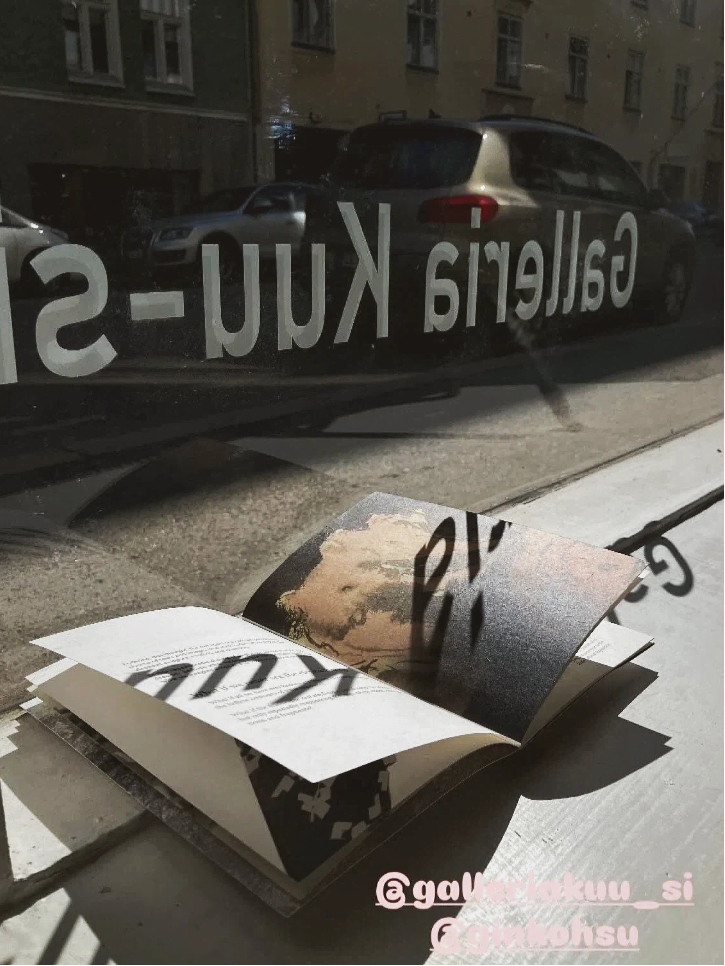
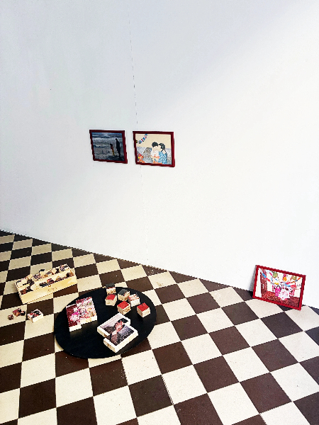
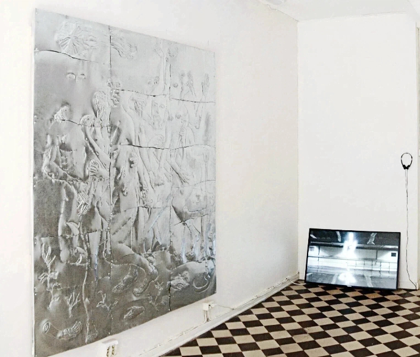

OPEN CALL
Dear Artist,
Galleria Kuu-si is an artist- and curator-run, non-profit exhibition space in central Helsinki, just 500 meters from Kamppi Metro Station. Our compact 22.5 m² space features a street-facing window on Eerikinkatu with excellent visibility.
We’re creating an art lab in the city — a place for fun, bold, diverse, and experimental projects. We help document and promote your show on social media channels, and offer curatorial support if needed. We do not take any commission on artwork sales. We welcome artists in Finland and also international artists.
Artists are responsible for installation, de-installation, transportation, insurance, and hosting the exhibition opening. The Kuu-si team may be able to help with invigilation, but this cannot be guaranteed. By applying, artists acknowledge that they may be required to invigilate their own exhibition. For international artists who are unable to invigilate onsite, we will try to find a solution where possible.
Artists who invigilate themselves may decide the opening hours. For example, the gallery may be open Tuesday–Sunday, 13:00–17:00. We recommend a minimum 20 hours per week. The gallery should be closed on Mondays, and before 12:00 and after 18:00 on other days.
For a two-week slot between mid-October 2026 and the end of March 2027, we ask for a contribution of €450 to help cover operational costs, including space rental, and social media promotion/documentation.
HOW TO APPLY
Submit ONE PDF in English (or Finnish if needed) to info@galleriakuusi.com including:
- Page 1: A short paragraph introducing yourself/your group.
- Page 2: Any periods of time that you are unavailable. We will try to accommodate your preferences where possible.
- Page 3: A short description of your exhibition idea and medium (max one page).
- Optional Page 4: Condensed CV(s) (max two pages).
- Page 5 onwards: Portfolio (max 5 pages each artist).
Applicants interested in the October 15–30 or November 1–15 exhibition slots are encouraged to submit their applications early. Selected applicants for these periods may be contacted before the official notification date. We will get back to you with the result by September 11. We are a small team working voluntarily, and we sincerely appreciate the time and care you put into your application.
ABOUT
Galleria Kuu-si is an artist-run exhibition space located at Eerikinkatu 33, Helsinki.
The name of our space, Kuu-si, is inspired by W. Somerset Maugham's The Moon and Sixpence. It reflects the challenge many artists face: pursuing creative dreams while navigating the practical realities of everyday life.
Our aim is to support the art community in building a sustainable art practice. We are seeking funding to make the space rent-free whenever possible. We also encourage artists to collaborate with our twin sister, the craft and artisan shop Honobono, located next door. This collaboration can include workshops or consignment of smaller art/design objects, helping artists create a more sustainable practice.
Contact: info@galleriakuusi.com
INS: @galleriakuu_si
Team
Curator & Founder: Ginko Hsu

Program Support: Kanny Wu

EXHIBITIONS
Exhibition Season I, 2026
April
Group show: Kuu ja kuusi penniä
Ginko Hsu
May
Group show: From A Far
Andreas Behn-Eschenburg
June
Eoin O’Dowd
Kanny Wu
July
Toarie Strandman
Uliana Konstantinova
August
Paula Savolainen & Siiri Turpeinen
Alexandra Rosa Koskinen
September
Alexi Johnstone & Nóra Somos
Elina Kervinen
October
Lizard Teittinen
(TBA)